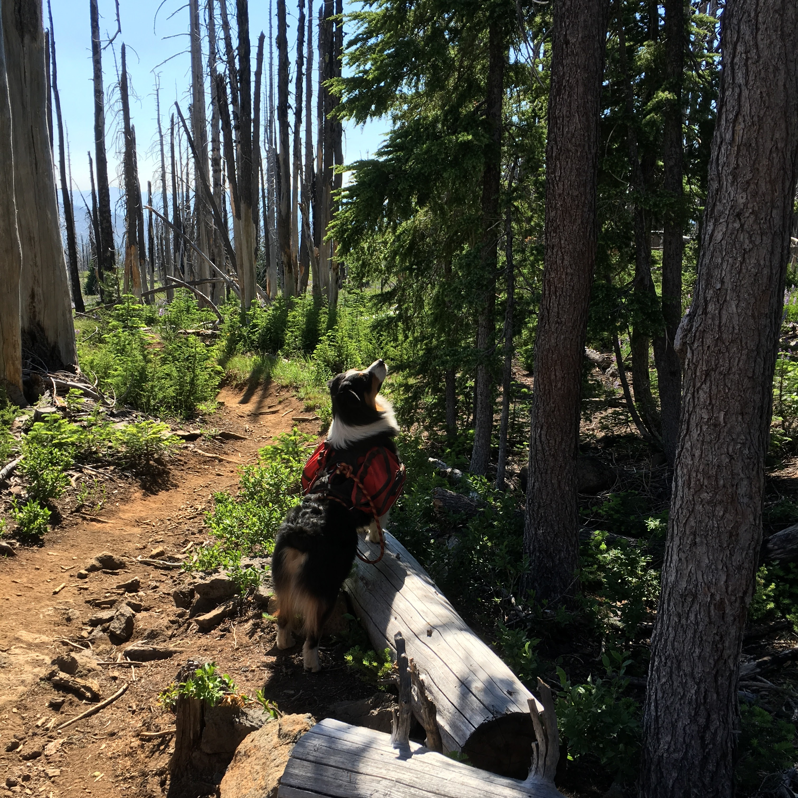

Hike to Summit Lake
The hike to summit lake is about 4.5 miles from the Pacific Crest Trail access point on hwy 20.
In my opinion this hike is one the best hikes in the region, it’s relatively short, the overall ascent
is low and the views are spectacular. However, the turnoff to summit lake was a little hard to find, but
this keep traffic to summit lake low.
View
Trail »
GPX

Hike to Mirror Lake
The hike to Mirror Lake is about 8 miles from the Two Pan trailhead in the Eagle Cap Wilderness
of Northeastern Oregon. Eagle Cap reminds me of the Sierra Nevadas and the
hike was so awesome it gave me a heart attack, for real. 8 miles into the wilderness I had a heart
attack, and I walked out thinking it was altitude sickness.
View Trail »
GPX
Hike to Lake of the Woods
The hike to Lake of the Woods is a little over 8 kilometers into the Jefferson Wilderness in the Cascade Range
of Oregon. It covers some of the same route we took on the Jorn Lake trip, but once we reached
Marion Lake we head northeast.
View Trail »
GPX
Hike to Jorn Lake
The hike to Jorn Lake is approximately 7 miles into the Jefferson Wilderness in the Cascade Range of
Oregon. It's not a difficult trail when clear, but I advise that you contact the local forest service
about trail conditions; we encountered down trees that made the a large portion of the trail a
jungle gym.
View Trail »

New Hike
Next trip is in the planing phase! I'm thinking Washtington!
No details yet»
The Purpose It's really fun stuff.
The purpose of this story map is to show and tell the adventures that my girlfriend and I go on with
Finn the dog. Most of these trip so far have taken place in oregon, but I hope to expand them to the
Pacific NorthWest as time goes by. I'm an geology and geospatial scientists and I love combining
technology and recreation to make maps of all kinds of things. This is really just another way to
help me learn about web mapping and programing languages. It is also a great way to show fellow
hikers an in depth view of these trails. The images are georeferenced to the markers on the map. That
is, each image was taken at the coordinates represented by the marker on the map. Each of these trails
have
been track by GPS with error not exceeding 12 meters so if you use the data keep that in mind. I’m going
create links with KML or GPX file so people can upload the data to there own GPS receiver. This is a
work in progress and continues to evolve, and I hope you enjoy it as must I do.